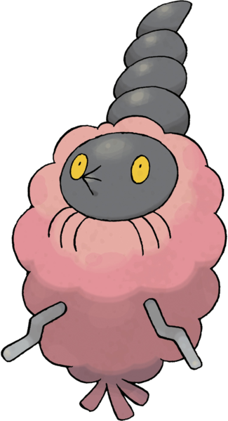
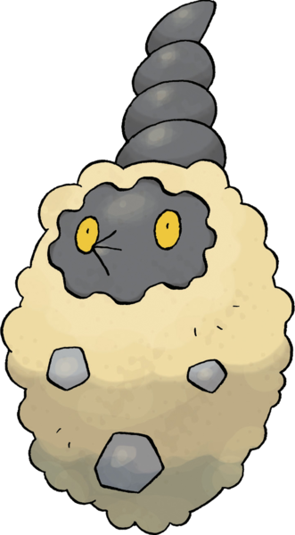

Cheniti #412
Burmy
DE 1/4
Niveau 1
Taille TP
Type 
Classe d'armure 12
Dé de vie d6
Points de vie 17
Vitesse 3 m, escalade 3 m
| FOR | DEX | CON | INT | SAG | CHA |
|---|---|---|---|---|---|
| 10 (+0) | 10 (+0) | 12 (+1) | 6 (-2) | 12 (+1) | 10 (+0) |
Jets de sauvegarde Constitution
Compétences Nature, Survie
Vulnérabilités 


Résistances 


Sens vision dans le noir 6 m
Talents
Cape. Cheniti peut s'entourer de trois capes différentes, qui changent suivant l'environnement de son dernier combat. Cape plante pour l'herbe et les forêts. Cape déchet pour les bâtiments et les villes. Cape sable pour les grottes, les déserts ou les montagnes. Les capes n'ont aucun effet.
Mue. TODO TRADUIRE If this Pokémon is affected by a negative status ailment, they can roll a d4 at the end of each of their turns. On a result of 4, they are cured.
Talents cachés
Envelocape. TODO TRADUIRE This Pokémon does not take damage from weather-related moves like Hail, Weather Ball, etc.
Évolution
Les mâles Cheniti peuvent évoluer en Papilord à partir du niveau 6.Les femelles Cheniti peuvent évoluer en Cheniselle à partir du niveau 6 prenant une cape basé sur le lieux de leur évolution. Cape plante pour l'herbe et les forêts. Cape déchet pour les bâtiments et les villes. Cape sable pour les grottes, les déserts ou les montagnes.
Quand ils évoluent, les mâles et les femelles gagnent 9 points de caractéristiques. Ils ne peuvent pas dépasser 20 dans une valeur de caractéristique.
Capacités
Capacités de départ Abri
Niveau 2 Charge
Niveau 6 Piqure, Puissance Cachee